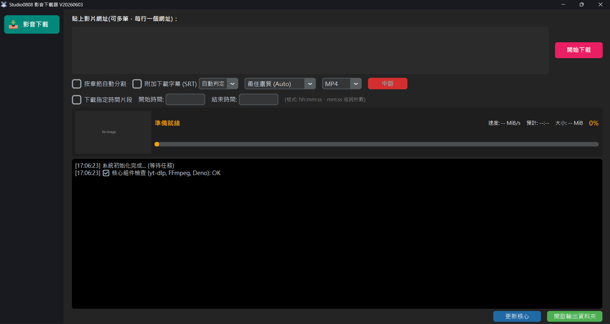

支援 YouTube, Facebook, Instagram 等上百種影音平台，解壓縮後直接啟動，無需安裝。
內建 FFmpeg 核心，自動將影片轉換為高品質 MP3, MP4, MOV, WMV 等格式。
採用專業資料夾封裝，純淨不寫入系統登錄檔。通過 VirusTotal 國際權威資安檢測，保證無毒、安全、可靠。
支援一次貼上多個網址，並可自動解析 YouTube 播放清單供您自由勾選下載。
依據影片內建章節或說明欄時間軸，精準自動分割長影片，方便管理。
支援下載影片內建的官方字幕或自動產生字幕 (SRT 格式)，可選擇繁/簡/英/日等語言 (需視該影片原先是否有提供而定)。
下載後請務必將 Studio0808_Downloader 資料夾完整解壓縮出來，請勿直接在 ZIP
內執行。
進入資料夾，雙擊 Studio0808_Downloader.exe 即可開啟主程式。
貼上網址並點擊琥珀色的「立即下載」按鈕。程式將自動完成下載與轉檔。
下載完成後，請至 Studio0808_Downloads 資料夾查看。檔名會自動附加畫質標籤 (例如 _1080P) 方便辨識。
A: 這是完全正常的！程式首次運行時，會自動檢查並補齊運作必備的兩大背景核心：**「yt-dlp (下載組件)」** 與 **「FFmpeg (影音轉檔組件)」**。這個下載與安裝流程 **「只需要在第一次開啟時執行一次」**，依據您的網路速度大約需時 1~3 分鐘，安裝成功後就能無縫暢快地下載了！
A: 這是 YouTube 的技術安全機制。1080p 以上的高畫質影片在伺服器上是將 **「畫面」與「聲音」分開儲存** 的。下載器運作時，必須同時抓下這兩個軌道，並在背景透過內建的 FFmpeg 核心自動將它們「揉合成一個檔案」（如 .mp4）。這屬於正常運作程序，在看見進度條達到 100% 後，請稍微等待數秒讓系統完成封裝，檔案就會出現囉！
A: 這是程式的預設推薦選項。代表會自動掃描該影片所有可用的解析度，並直接下載「最高畫質」的版本 (例如 4K 或 8K)。若您不確定該選哪個，選這個就對了！
A: 程式會在您執行的位置自動建立一個名為 Studio0808_Downloads 的資料夾，所有檔案都在那裡。
A: 請確認您是否已經「完整解壓縮」資料夾。若只拉出 EXE 檔執行會因為缺少核心檔案而失敗。
A: 影音平台 (如 YouTube) 經常更新演算法導致舊核心失效。若您遇到下載失敗，請直接點擊程式右上角的 「更新核心 (Update Core)」 按鈕，程式會自動抓取最新版核心，更新完畢後通常就能正常下載了。
A: 這是正常現象。當進度條顯示 100% 且開始左右跑動時，代表正在進行最後的格式轉換 (如 MOV)。請耐心等待幾秒至幾分鐘。
A: 程式順利運作需要 yt-dlp.exe 與 ffmpeg.exe 這兩個核心檔案。若您的 tools
資料夾內遺失這些檔案，程式啟動時會自動嘗試幫您重新下載並安裝到正確位置。
A: 程式順利運作需要 yt-dlp.exe 與 ffmpeg.exe 這兩個核心檔案。若您的 tools
資料夾內遺失這些檔案，程式啟動時會自動嘗試幫您重新下載並安裝到正確位置。
1. 僅供個人使用：本軟體 (Studio0808) 僅供技術研究、個人學習或資料備份使用。嚴禁將本軟體用於任何商業用途。
2. 尊重著作權：使用者在使用本軟體下載影音內容時，應務必遵守各影音平台之服務條款 (Terms of Service) 及相關著作權法規。請勿散布、重製或公開播放未經授權的受版權保護內容。
3. 使用者責任：使用者應自行承擔使用本軟體下載檔案所衍生之所有法律責任。開發者對於使用者利用本軟體所產生之任何違法行為或後果，概不負責。